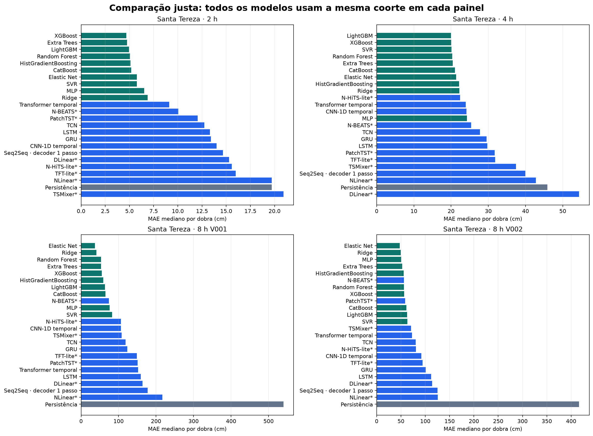
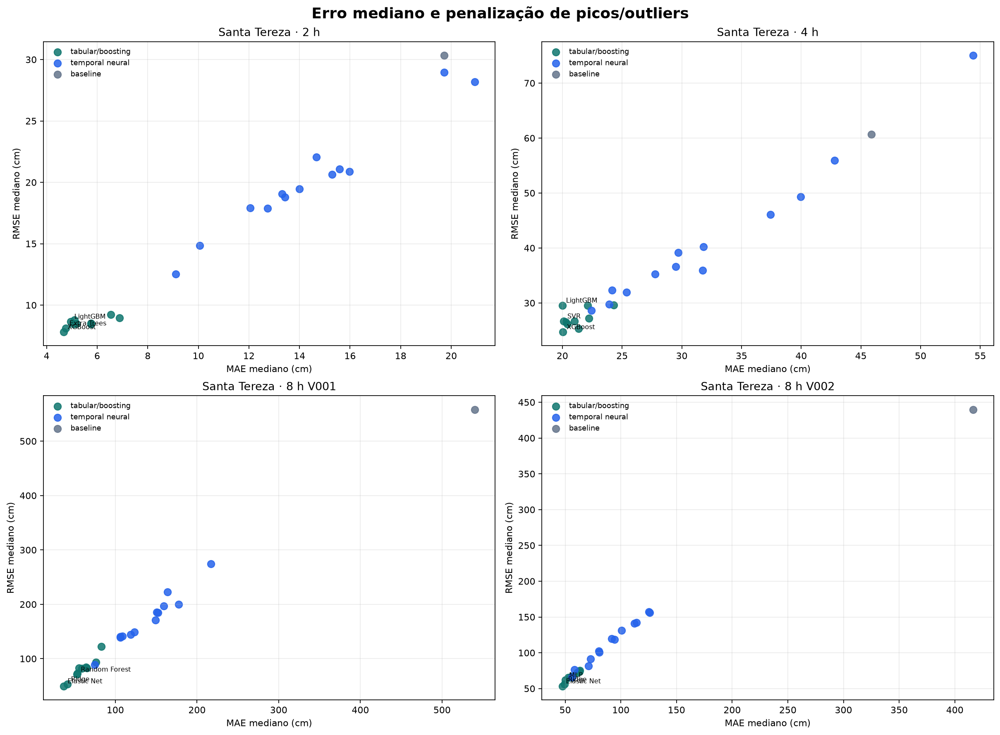
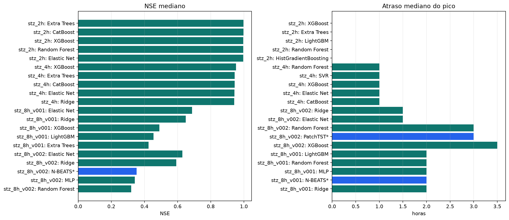
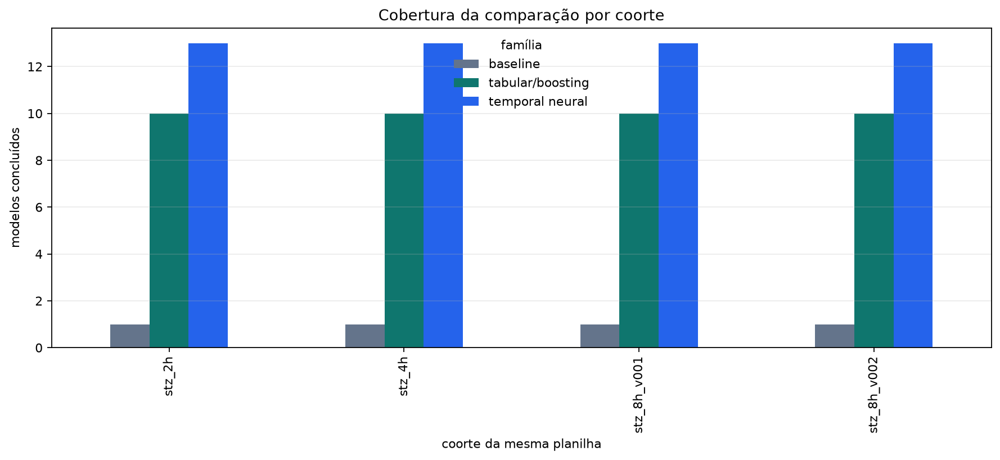

PREVINE · pesquisa experimental · comparação justa
Todos os modelos recebem os mesmos dados antes de serem comparados.
Rodada congelada de Santa Tereza: quatro coortes, quatro planilhas de origem, janela fixa de 4 h, mesmas linhas-alvo, mesmas dobras causais e mesma definição do erro.
Não é alerta nem modelo promovido. Este relatório é um experimento offline. A RNA atual do site e GNN/Transformer-GNN ficam fora do ranking principal quando não podem obedecer ao mesmo contrato.
O que foi igual
Coortes usadas
features/hora: 15 · janela fixa: 4 h
features/hora: 26 · janela fixa: 4 h
features/hora: 31 · janela fixa: 4 h
features/hora: 28 · janela fixa: 4 h
Resultado comparável
Os modelos são ordenados primeiro por MAE mediano nas dobras causais e depois por RMSE mediano. A posição é apenas uma ordenação dentro da respectiva coorte; não existe um vencedor universal entre horizontes e contratos.
| Coorte | Modelo | Família | Dobras | Eventos | MAE mediano cm | RMSE mediano cm | NSE mediano | Erro pico cm | Atraso pico h | Posição |
|---|---|---|---|---|---|---|---|---|---|---|
| Santa Tereza · 2 h | XGBoost | tabular/boosting | 12 | 12 | 4.68 | 7.82 | 1.00 | 3.49 | 0.00 | 1 |
| Santa Tereza · 2 h | Extra Trees | tabular/boosting | 12 | 12 | 4.75 | 8.12 | 1.00 | 4.25 | 0.00 | 2 |
| Santa Tereza · 2 h | LightGBM | tabular/boosting | 12 | 12 | 4.95 | 8.67 | 1.00 | 5.22 | 0.00 | 3 |
| Santa Tereza · 2 h | Random Forest | tabular/boosting | 12 | 12 | 5.06 | 8.47 | 1.00 | 4.14 | 0.00 | 4 |
| Santa Tereza · 2 h | HistGradientBoosting | tabular/boosting | 12 | 12 | 5.10 | 8.81 | 1.00 | 5.07 | 0.00 | 5 |
| Santa Tereza · 2 h | CatBoost | tabular/boosting | 12 | 12 | 5.18 | 8.50 | 1.00 | 6.07 | 0.50 | 6 |
| Santa Tereza · 2 h | Elastic Net | tabular/boosting | 12 | 12 | 5.76 | 8.45 | 1.00 | 6.20 | 0.00 | 7 |
| Santa Tereza · 2 h | SVR | tabular/boosting | 12 | 12 | 5.76 | 8.52 | 1.00 | 5.57 | 1.00 | 8 |
| Santa Tereza · 2 h | MLP | tabular/boosting | 12 | 12 | 6.54 | 9.23 | 1.00 | 9.77 | 0.00 | 9 |
| Santa Tereza · 2 h | Ridge | tabular/boosting | 12 | 12 | 6.88 | 8.96 | 1.00 | 8.50 | 0.00 | 10 |
| Santa Tereza · 2 h | Transformer temporal | temporal neural | 12 | 12 | 9.11 | 12.52 | 0.99 | 21.47 | 1.00 | 11 |
| Santa Tereza · 2 h | N-BEATS experimental | temporal neural | 12 | 12 | 10.06 | 14.84 | 0.99 | 9.12 | 1.00 | 12 |
| Santa Tereza · 2 h | PatchTST experimental | temporal neural | 12 | 12 | 12.05 | 17.90 | 0.98 | 18.73 | 1.00 | 13 |
| Santa Tereza · 2 h | TCN | temporal neural | 12 | 12 | 12.75 | 17.87 | 0.98 | 7.57 | 1.00 | 14 |
| Santa Tereza · 2 h | LSTM | temporal neural | 12 | 12 | 13.31 | 19.05 | 0.98 | 12.18 | 1.00 | 15 |
| Santa Tereza · 2 h | GRU | temporal neural | 12 | 12 | 13.42 | 18.78 | 0.98 | 14.90 | 1.00 | 16 |
| Santa Tereza · 2 h | CNN-1D temporal | temporal neural | 12 | 12 | 14.00 | 19.47 | 0.98 | 15.18 | 1.00 | 17 |
| Santa Tereza · 2 h | Seq2Seq · decoder 1 passo | temporal neural | 12 | 12 | 14.67 | 22.05 | 0.97 | 12.46 | 1.00 | 18 |
| Santa Tereza · 2 h | DLinear experimental | temporal neural | 12 | 12 | 15.29 | 20.63 | 0.98 | 14.02 | 1.00 | 19 |
| Santa Tereza · 2 h | N-HiTS-lite experimental | temporal neural | 12 | 12 | 15.59 | 21.07 | 0.98 | 12.34 | 1.00 | 20 |
| Santa Tereza · 2 h | TFT-lite experimental | temporal neural | 12 | 12 | 15.98 | 20.86 | 0.98 | 14.95 | 1.00 | 21 |
| Santa Tereza · 2 h | NLinear experimental | temporal neural | 12 | 12 | 19.71 | 28.94 | 0.95 | 6.89 | 2.00 | 22 |
| Santa Tereza · 2 h | Persistência | baseline | 12 | 12 | 19.72 | 30.34 | 0.94 | 0.00 | 2.00 | 23 |
| Santa Tereza · 2 h | TSMixer experimental | temporal neural | 12 | 12 | 20.93 | 28.19 | 0.96 | 17.35 | 2.00 | 24 |
| Santa Tereza · 4 h | LightGBM | tabular/boosting | 13 | 13 | 20.00 | 29.57 | 0.94 | 23.46 | 2.00 | 1 |
| Santa Tereza · 4 h | XGBoost | tabular/boosting | 13 | 13 | 20.06 | 24.74 | 0.95 | 16.70 | 1.00 | 2 |
| Santa Tereza · 4 h | SVR | tabular/boosting | 13 | 13 | 20.11 | 26.69 | 0.92 | 16.77 | 1.00 | 3 |
| Santa Tereza · 4 h | Random Forest | tabular/boosting | 13 | 13 | 20.29 | 26.51 | 0.94 | 14.15 | 1.00 | 4 |
| Santa Tereza · 4 h | Extra Trees | tabular/boosting | 13 | 13 | 20.41 | 26.19 | 0.94 | 11.02 | 1.00 | 5 |
| Santa Tereza · 4 h | CatBoost | tabular/boosting | 13 | 13 | 21.00 | 26.68 | 0.94 | 15.69 | 1.00 | 6 |
| Santa Tereza · 4 h | Elastic Net | tabular/boosting | 13 | 13 | 21.37 | 25.34 | 0.94 | 17.14 | 1.00 | 7 |
| Santa Tereza · 4 h | HistGradientBoosting | tabular/boosting | 13 | 13 | 22.12 | 29.51 | 0.92 | 7.99 | 1.00 | 8 |
| Santa Tereza · 4 h | Ridge | tabular/boosting | 13 | 13 | 22.22 | 27.23 | 0.94 | 17.02 | 1.00 | 9 |
| Santa Tereza · 4 h | N-HiTS-lite experimental | temporal neural | 13 | 13 | 22.42 | 28.60 | 0.90 | 19.26 | 1.00 | 10 |
| Santa Tereza · 4 h | Transformer temporal | temporal neural | 13 | 13 | 23.90 | 29.79 | 0.90 | 30.91 | 1.00 | 11 |
| Santa Tereza · 4 h | CNN-1D temporal | temporal neural | 13 | 13 | 24.15 | 32.34 | 0.88 | 17.88 | 1.00 | 12 |
| Santa Tereza · 4 h | MLP | tabular/boosting | 13 | 13 | 24.29 | 29.60 | 0.88 | 10.41 | 1.00 | 13 |
| Santa Tereza · 4 h | N-BEATS experimental | temporal neural | 13 | 13 | 25.36 | 31.91 | 0.91 | 31.78 | 2.00 | 14 |
| Santa Tereza · 4 h | TCN | temporal neural | 13 | 13 | 27.76 | 35.26 | 0.88 | 14.50 | 1.00 | 15 |
| Santa Tereza · 4 h | GRU | temporal neural | 13 | 13 | 29.50 | 36.57 | 0.86 | 16.72 | 1.00 | 16 |
| Santa Tereza · 4 h | LSTM | temporal neural | 13 | 13 | 29.70 | 39.14 | 0.79 | 18.26 | 2.00 | 17 |
| Santa Tereza · 4 h | PatchTST experimental | temporal neural | 13 | 13 | 31.73 | 35.97 | 0.75 | 39.81 | 2.00 | 18 |
| Santa Tereza · 4 h | TFT-lite experimental | temporal neural | 13 | 13 | 31.82 | 40.26 | 0.85 | 10.12 | 3.00 | 19 |
| Santa Tereza · 4 h | TSMixer experimental | temporal neural | 13 | 13 | 37.43 | 46.08 | 0.72 | 42.51 | 3.00 | 20 |
| Santa Tereza · 4 h | Seq2Seq · decoder 1 passo | temporal neural | 13 | 13 | 39.95 | 49.33 | 0.77 | 23.02 | 2.00 | 21 |
| Santa Tereza · 4 h | NLinear experimental | temporal neural | 13 | 13 | 42.80 | 55.96 | 0.60 | 59.58 | 2.00 | 22 |
| Santa Tereza · 4 h | Persistência | baseline | 13 | 13 | 45.86 | 60.69 | 0.56 | 0.00 | 4.00 | 23 |
| Santa Tereza · 4 h | DLinear experimental | temporal neural | 13 | 13 | 54.40 | 75.04 | 0.29 | 35.56 | 5.00 | 24 |
| Santa Tereza · 8 h V001 | Elastic Net | tabular/boosting | 11 | 11 | 36.98 | 49.72 | 0.69 | 60.21 | 2.00 | 1 |
| Santa Tereza · 8 h V001 | Ridge | tabular/boosting | 11 | 11 | 41.13 | 53.29 | 0.65 | 43.11 | 2.00 | 2 |
| Santa Tereza · 8 h V001 | Random Forest | tabular/boosting | 11 | 11 | 53.18 | 71.22 | 0.30 | 63.12 | 2.00 | 3 |
| Santa Tereza · 8 h V001 | Extra Trees | tabular/boosting | 11 | 11 | 53.28 | 72.72 | 0.42 | 99.66 | 4.00 | 4 |
| Santa Tereza · 8 h V001 | XGBoost | tabular/boosting | 11 | 11 | 55.42 | 83.05 | 0.49 | 68.90 | 4.00 | 5 |
| Santa Tereza · 8 h V001 | HistGradientBoosting | tabular/boosting | 11 | 11 | 59.22 | 81.75 | 0.11 | 81.66 | 3.00 | 6 |
| Santa Tereza · 8 h V001 | LightGBM | tabular/boosting | 11 | 11 | 63.90 | 84.31 | 0.46 | 42.03 | 2.00 | 7 |
| Santa Tereza · 8 h V001 | CatBoost | tabular/boosting | 11 | 11 | 64.93 | 82.59 | 0.25 | 73.62 | 5.00 | 8 |
| Santa Tereza · 8 h V001 | N-BEATS experimental | temporal neural | 11 | 11 | 74.52 | 88.93 | -0.05 | 100.26 | 2.00 | 9 |
| Santa Tereza · 8 h V001 | MLP | tabular/boosting | 11 | 11 | 76.13 | 93.34 | 0.09 | 61.22 | 2.00 | 10 |
| Santa Tereza · 8 h V001 | SVR | tabular/boosting | 11 | 11 | 82.68 | 122.20 | -0.53 | 84.47 | 5.00 | 11 |
| Santa Tereza · 8 h V001 | N-HiTS-lite experimental | temporal neural | 11 | 11 | 105.97 | 139.21 | -0.66 | 143.60 | 4.00 | 12 |
| Santa Tereza · 8 h V001 | CNN-1D temporal | temporal neural | 11 | 11 | 106.22 | 140.73 | -1.64 | 95.32 | 5.00 | 13 |
| Santa Tereza · 8 h V001 | TSMixer experimental | temporal neural | 11 | 11 | 108.52 | 141.56 | -1.06 | 50.13 | 14.00 | 14 |
| Santa Tereza · 8 h V001 | TCN | temporal neural | 11 | 11 | 118.54 | 144.21 | -0.90 | 122.48 | 8.00 | 15 |
| Santa Tereza · 8 h V001 | GRU | temporal neural | 11 | 11 | 123.33 | 148.84 | -1.24 | 101.82 | 5.00 | 16 |
| Santa Tereza · 8 h V001 | TFT-lite experimental | temporal neural | 11 | 11 | 149.04 | 171.30 | -2.37 | 97.58 | 8.00 | 17 |
| Santa Tereza · 8 h V001 | PatchTST experimental | temporal neural | 11 | 11 | 150.87 | 185.75 | -4.69 | 123.48 | 7.00 | 18 |
| Santa Tereza · 8 h V001 | Transformer temporal | temporal neural | 11 | 11 | 152.28 | 184.73 | -5.03 | 174.39 | 11.00 | 19 |
| Santa Tereza · 8 h V001 | LSTM | temporal neural | 11 | 11 | 159.52 | 197.22 | -3.69 | 104.44 | 8.00 | 20 |
| Santa Tereza · 8 h V001 | DLinear experimental | temporal neural | 11 | 11 | 163.81 | 222.67 | -3.80 | 151.93 | 5.00 | 21 |
| Santa Tereza · 8 h V001 | Seq2Seq · decoder 1 passo | temporal neural | 11 | 11 | 177.66 | 199.98 | -3.60 | 135.74 | 8.00 | 22 |
| Santa Tereza · 8 h V001 | NLinear experimental | temporal neural | 11 | 11 | 217.09 | 274.29 | -9.55 | 164.52 | 25.00 | 23 |
| Santa Tereza · 8 h V001 | Persistência | baseline | 11 | 11 | 539.90 | 558.17 | -34.62 | 465.00 | 19.00 | 24 |
| Santa Tereza · 8 h V002 | Elastic Net | tabular/boosting | 4 | 4 | 47.48 | 53.53 | 0.63 | 35.41 | 1.50 | 1 |
| Santa Tereza · 8 h V002 | Ridge | tabular/boosting | 4 | 4 | 49.32 | 55.99 | 0.59 | 29.03 | 1.50 | 2 |
| Santa Tereza · 8 h V002 | MLP | tabular/boosting | 4 | 4 | 50.30 | 61.98 | 0.34 | 37.77 | 4.00 | 3 |
| Santa Tereza · 8 h V002 | Extra Trees | tabular/boosting | 4 | 4 | 52.67 | 65.23 | 0.26 | 73.11 | 9.50 | 4 |
| Santa Tereza · 8 h V002 | HistGradientBoosting | tabular/boosting | 4 | 4 | 55.44 | 66.65 | 0.10 | 70.51 | 11.50 | 5 |
| Santa Tereza · 8 h V002 | N-BEATS experimental | temporal neural | 4 | 4 | 56.08 | 66.10 | 0.35 | 34.36 | 3.50 | 6 |
| Santa Tereza · 8 h V002 | Random Forest | tabular/boosting | 4 | 4 | 56.21 | 65.25 | 0.32 | 89.48 | 3.00 | 7 |
| Santa Tereza · 8 h V002 | XGBoost | tabular/boosting | 4 | 4 | 56.38 | 67.34 | 0.06 | 62.04 | 3.50 | 8 |
| Santa Tereza · 8 h V002 | PatchTST experimental | temporal neural | 4 | 4 | 58.40 | 76.12 | -0.22 | 37.76 | 3.00 | 9 |
| Santa Tereza · 8 h V002 | CatBoost | tabular/boosting | 4 | 4 | 60.95 | 72.24 | 0.11 | 95.66 | 4.00 | 10 |
| Santa Tereza · 8 h V002 | LightGBM | tabular/boosting | 4 | 4 | 62.79 | 73.33 | 0.06 | 72.13 | 11.50 | 11 |
| Santa Tereza · 8 h V002 | SVR | tabular/boosting | 4 | 4 | 63.30 | 74.93 | -0.05 | 71.87 | 13.50 | 12 |
| Santa Tereza · 8 h V002 | TSMixer experimental | temporal neural | 4 | 4 | 70.91 | 81.63 | 0.02 | 101.71 | 26.50 | 13 |
| Santa Tereza · 8 h V002 | Transformer temporal | temporal neural | 4 | 4 | 72.82 | 91.65 | -0.69 | 46.20 | 5.50 | 14 |
| Santa Tereza · 8 h V002 | TCN | temporal neural | 4 | 4 | 80.17 | 102.44 | -0.34 | 107.45 | 5.00 | 15 |
| Santa Tereza · 8 h V002 | N-HiTS-lite experimental | temporal neural | 4 | 4 | 80.79 | 100.86 | -0.28 | 74.03 | 6.00 | 16 |
| Santa Tereza · 8 h V002 | CNN-1D temporal | temporal neural | 4 | 4 | 91.71 | 119.52 | -0.94 | 31.57 | 5.00 | 17 |
| Santa Tereza · 8 h V002 | TFT-lite experimental | temporal neural | 4 | 4 | 94.34 | 118.59 | -0.92 | 42.66 | 7.50 | 18 |
| Santa Tereza · 8 h V002 | GRU | temporal neural | 4 | 4 | 100.87 | 131.19 | -1.83 | 101.11 | 5.00 | 19 |
| Santa Tereza · 8 h V002 | LSTM | temporal neural | 4 | 4 | 112.21 | 141.16 | -2.00 | 97.22 | 5.00 | 20 |
| Santa Tereza · 8 h V002 | DLinear experimental | temporal neural | 4 | 4 | 114.03 | 142.38 | -1.90 | 144.64 | 16.50 | 21 |
| Santa Tereza · 8 h V002 | Seq2Seq · decoder 1 passo | temporal neural | 4 | 4 | 125.14 | 157.46 | -2.76 | 149.39 | 18.00 | 22 |
| Santa Tereza · 8 h V002 | NLinear experimental | temporal neural | 4 | 4 | 125.81 | 155.86 | -3.03 | 107.56 | 23.00 | 23 |
| Santa Tereza · 8 h V002 | Persistência | baseline | 4 | 4 | 416.43 | 439.83 | -37.76 | 351.00 | 19.50 | 24 |




Modelos que entraram no ranking
- Baseline: persistência.
- Modelos estáticos/boosting: Ridge, Elastic Net, SVR, MLP, Random Forest, Extra Trees, HistGradientBoosting, XGBoost, LightGBM, CatBoost.
- Redes temporais: CNN-1D temporal, LSTM, GRU, TCN, Seq2Seq · decoder 1 passo, Transformer temporal, DLinear experimental, NLinear experimental, TSMixer experimental, N-BEATS experimental, N-HiTS-lite experimental, PatchTST experimental, TFT-lite experimental.
- Mesma informação: os estáticos recebem o tensor das quatro horas achatado; as redes temporais recebem o mesmo tensor como sequência.
O que ficou fora — de propósito
- A RNA que está no site não foi re-treinada neste contrato comum; seus números de cache não foram misturados ao ranking.
- GNN e Transformer-GNN não foram inventados nem simulados: faltam grafo hidrológico, arestas, direção e tempo de propagação auditados.
- Os resultados não validam mancha, HAND/MDT, rota, abrigo ou alerta.
Auditoria de dados e reprodução
- Features restritas a
input_*; colunas futuras proibidas não foram aceitas. - Cada coorte foi verificada quanto a duplicidades de evento-horário.
- Normalização dos modelos foi ajustada somente nos dados de treino de cada dobra.
- Os hashes SHA-256 das planilhas estão registrados no manifesto:
strict_common_manifest.json. - Fontes:
stz_2h· 33487bf862aea460c336bf098bbb3defe5dd2a0f1bd49396cfb78a18a34371e2stz_4h· ee1e3b4a06c35a61c7eaefbb1128d61c47fc4582113c5cb65ea53bb5ebf57724stz_8h_v001· e675e77b671dbb6ac20e4a46230b851ca33b3a789ae6dbaa2a1c6409eb2ba9f6stz_8h_v002· 9d036026b8dedb7da90f285ca39f1b13c53f194266d18ddfd46d106874044edc